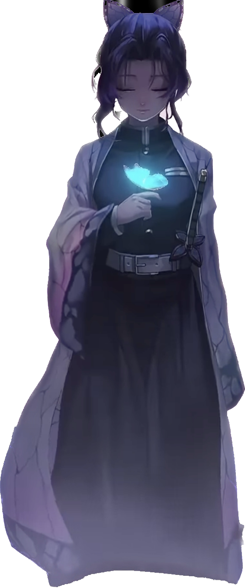
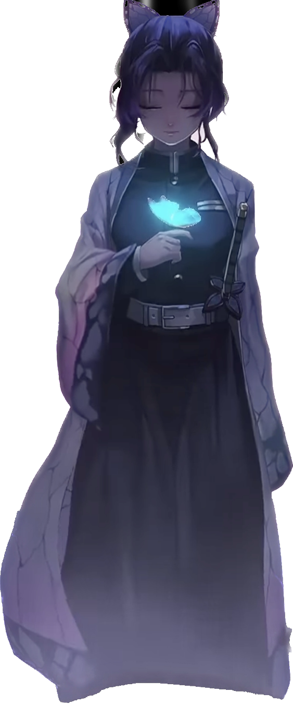

.jpg) 

THE ANIME
Shinobu Kocho
Anime is a captivating form of animation that originated in Japan and has gained a massive global following. Known for its diverse genres, unique artistic styles, and intricate storytelling, anime has something to offer for everyone. From action-packed adventures like "Naruto" and "One Piece" to thought-provoking series like "Death Note" and "Neon Genesis Evangelion," anime delves into a wide range of themes and emotions. Whether it's the fantastical worlds of Studio Ghibli's films, the epic battles of "Attack on Titan" and "My Hero Academia," or the introspective narratives of "Spirited Away" and "Your Lie in April," anime has the power to transport viewers to new dimensions of imagination and emotion.
SHIROKO
Shiroko is a soft-spoken girl, who deeply cares for her friends, to the extent that she would do anything to help her friends towards their goal of revitalizing the school. Though she is generally calm and reserved, she hyperfocuses on certain interests and can sometimes be oblivious to how others would react to them. She often bikes and walks far more than regular people can keep up, thinking distances of 10s of kilometers are average for her. She fantasizes about robbing banks and going on survival fishing trips, and being unable to do either of these things causes her to pout and act with remarkable petulance for how calm she usually is. Shiroko is willing to fight Hina the moment she laid eyes on her despite the head prefect's reputation, stopping only at Ayane's begging. She requires people like Sensei and Ayane to hold her back and keep her sensible.
GOJO
Gojo is known to be the strongest sorcerer in the series even among sorcerers at his level. He is capable of controlling huge amounts of cursed energy and is skilled at unleashing dangerously powerful techniques. Gojo is so strong that even jujutsu higher-ups feared his potential to overpower and overthrow them.
MIKU
Hatsune Miku is a Vocaloid who was introduced in August 2007. Miku is a singing humanoid synthesizer, who debuted in Yamaha Corporation's VOCALOID2. She is voiced by the voice actress, Saki Fujita. She is able to sing in Japanese, English and Chinese.
Furthermore, she got her own game series, co-produced by SEGA and Crypton Future Media, called Hatsune Miku: Project DIVA in 2009. The series went on to have more than 10 games and even its own spin-off series, Hatsune Miku: Project Mirai. She also made an appearance as one of the main Virtual Singers of Project Sekai: Colorful Stage.